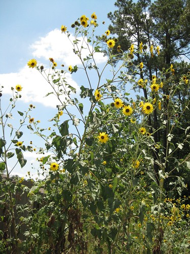
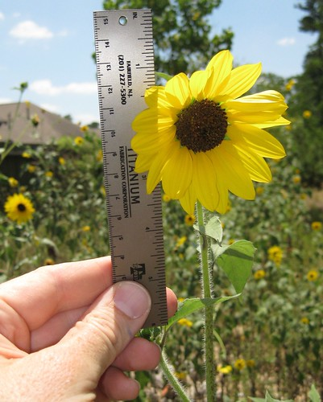
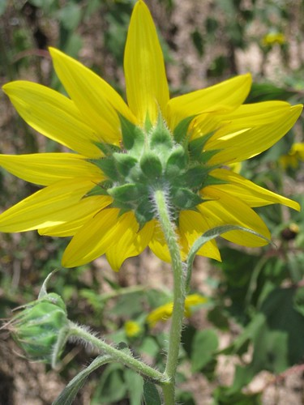
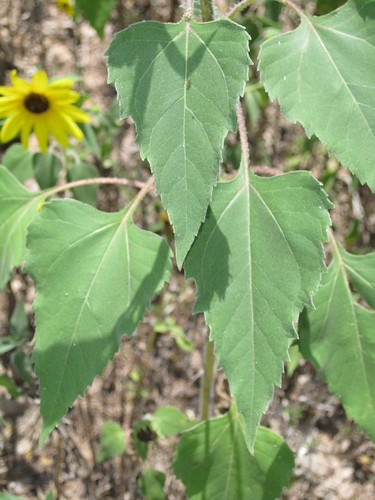
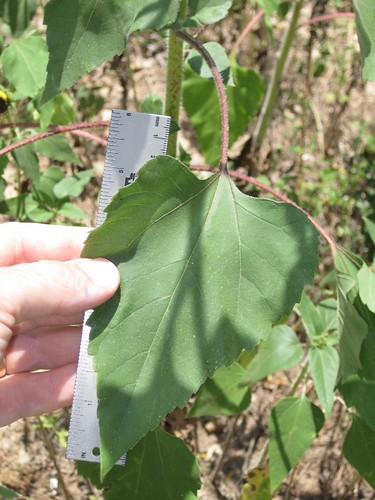
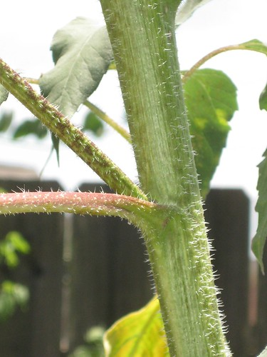

Scientific name: Helianthus annuus
Abundance: plentiful
What: young flowers, seeds
How: seeds can be eaten raw, ground into flour, roasted, or crushed for sunflower oil, the shells can be roasted then used as a coffee substitute; young flowers are boiled
Where: Sunny areas, ditches, abandoned yards
When: Seeds ripen in late summer, early fall
Nutritional Value: carbohydrates, protein and oils
Wild sunflowers

Close-up of flower with immature seeds.

Back of sunflower.

Sunflower leaves ranging from 2" to 6" in length.


Close-up of stem. Both leaves and stem have fine hairs.

Running rampant just about any sunny place mankind has torn up soil, the tall, gangly sunflowers seem to thrive in every wasteland. The flowers are much small flowers, only 2-3 inches across, are plentiful on each thick, tall stalk.
The young flowers, when green and before they've opened are quite good when boiled until tender then served with butter. The mature seeds are an excellent source of high-calorie oil which birds and other animals love. Humans can eat them, too but they are very small and are hard to get before animals do.
You can use the whole plant. Use it like you would an artichoke. Eat young leaves and stalks. Shave and roast or boil young flower heads.